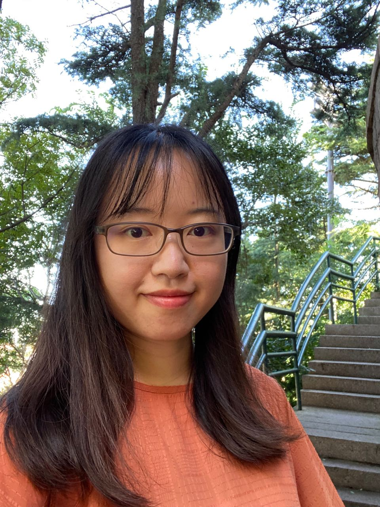
I am a Ph.D. student at MMLab@NTU, advised by Prof. Xingang Pan. I previously served as a senior research engineer at DAMO Academy, Alibaba Group, where I focused on video enhancement and editing, working with Peiran Ren, Xuansong Xie and Prof. Lei Zhang. Prior to joining Alibaba, I earned my M.Sc. in computer science and technology from Tsinghua University. I also hold a B.Sc. in fundamental physics and mathematics from Tsinghua University.
My research interests span deep learning, computer vision, and image and video generation and editing. I am also interested in exploring the applications of natural language processing in multimedia analysis.
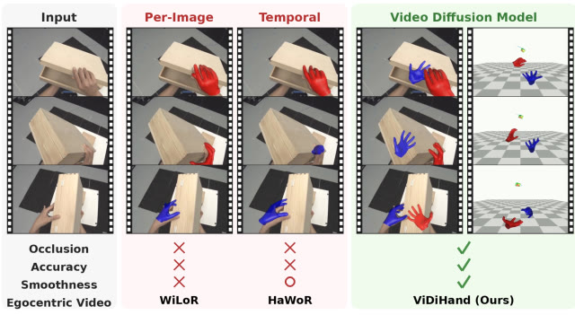
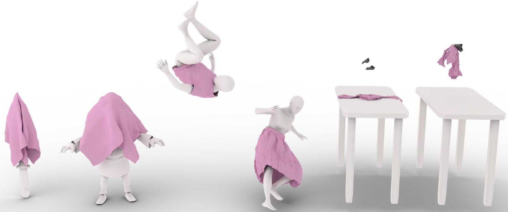
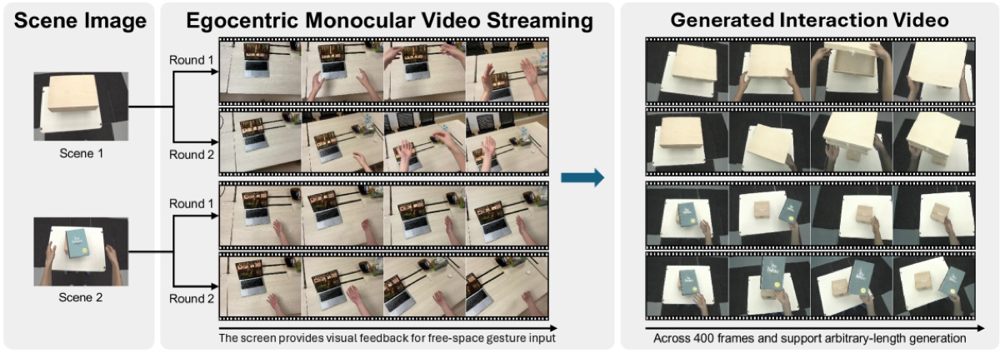
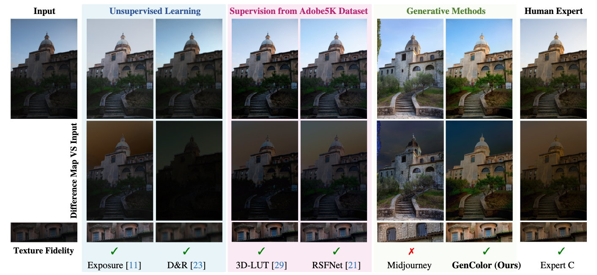
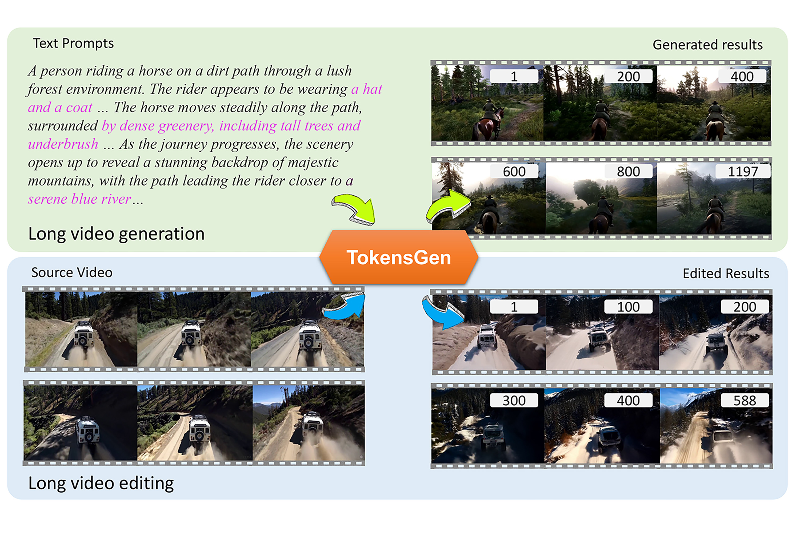
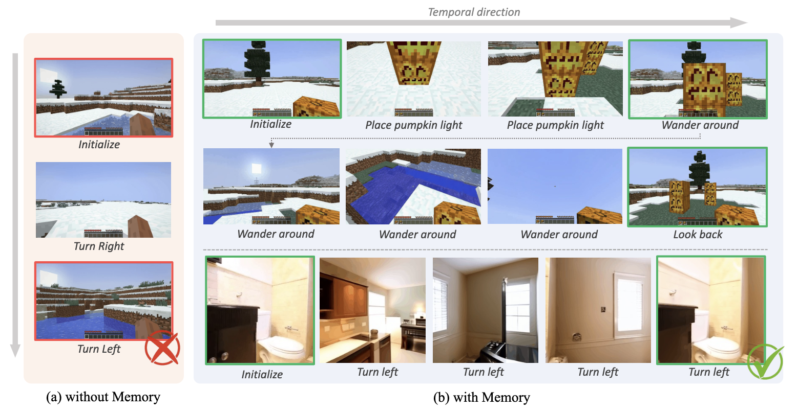
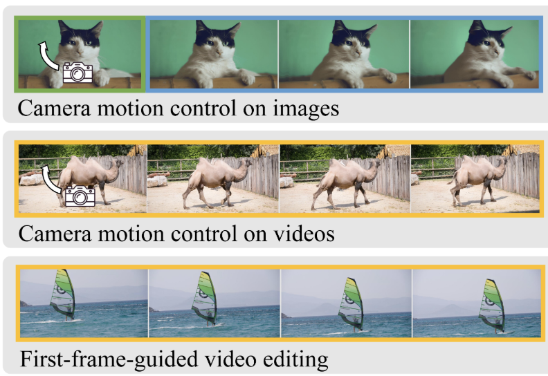
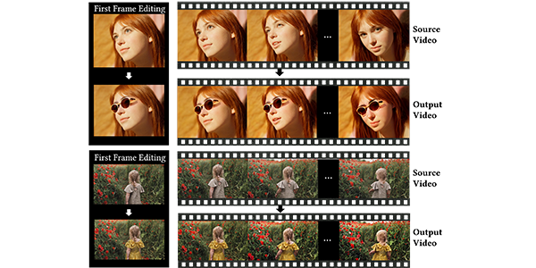
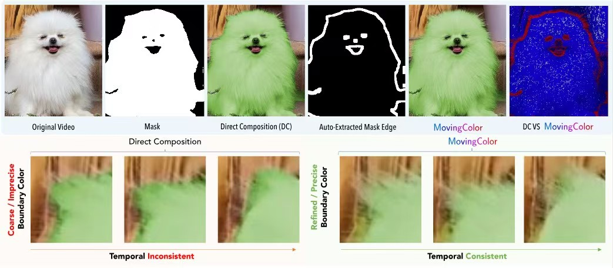
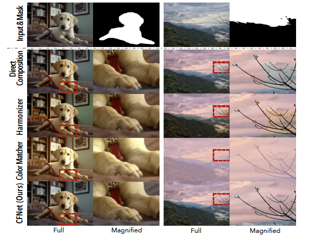
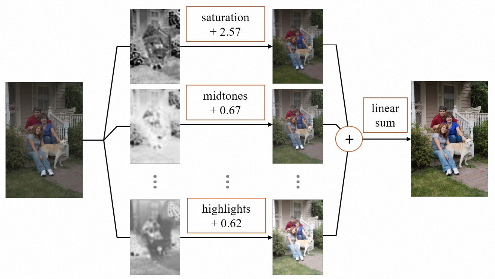
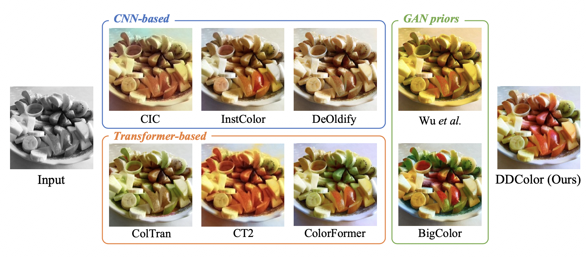
Methods, systems, and electronic devices for image processing
CN Patent 117,788,352 A, 2023Methods, systems, devices, and storage media for color grading of images and videos
CN Patent 114,549,674 A, 2022Methods and apparatus for video processing
CN Patent 114,302,175 A, 2022Methods and apparatus for video processing
CN Patent 114,286,126 A, 2022Methods and apparatus for training image processing model
CN Patent 114,092,756 A, 2022A method for video color grading, media data processing, device, and storage medium
CN Patent 113,497,954 A, 2021